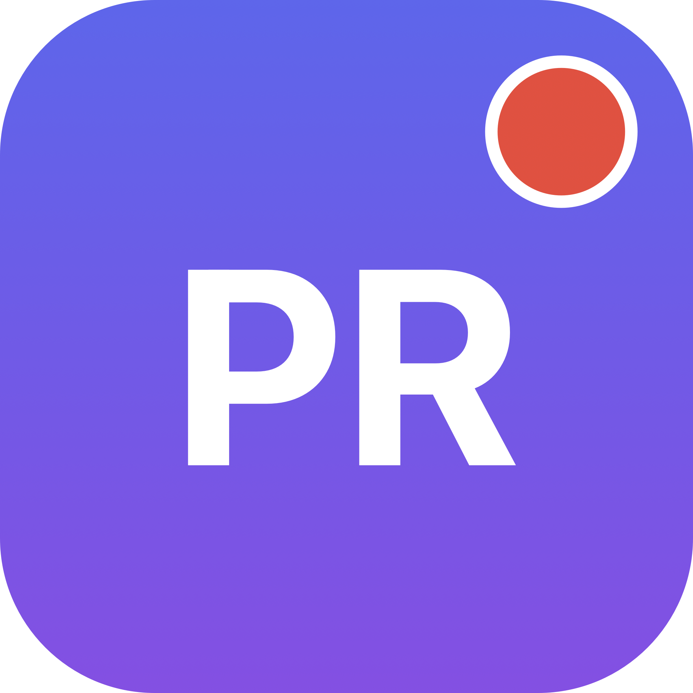

Your GitHub pull requests, in the menu bar.
A native macOS app that watches your open PRs — across your personal repos and every org you're in — and tells you, at a glance, which ones are waiting on you.
No browser tab-hopping. One color-coded count in your menu bar — red when something needs you, calm at inbox zero.
A red pill with the count of PRs waiting on you; monochrome when none; a checkmark at inbox zero. The badge doesn't lie.
Excludes drafts, honors live review requests (incl. team requests via CODEOWNERS), and your own PRs with failing required checks.
Each row says the reason inline — review requested, team review, CI failing — so the badge is more than a binary signal.
Hush a noisy PR for 1h, 4h, or until it next changes. A "hide until updated" snooze re-notifies once when the PR actually moves.
A keyboard-first window (⌘F) over all loaded PRs — filter live by repo, number, title, or author. ↑↓ to move, Enter to open.
Fires only on the transition — review requested, your CI fails — deduped, no storm on launch. Click to open the PR.
Themes (System / Light / Dark / Catppuccin), configurable refresh, an optional always-on-desktop panel, and launch-at-login.
Point it at your GHES host; the rest is the same. Two ways to sign in: a read-only PAT, or OAuth device flow.
ETag conditional requests make idle polls nearly free. Pauses on sleep, refreshes once on wake, holds cached when offline.
No App Store, no account. Download, drag, open.
PRPeek.dmg from the latest release and drag PRPeek to Applications.xattr -dr com.apple.quarantine /Applications/PRPeek.app
Prefer to build it yourself? git clone · bash Scripts/make-app.sh · open PRPeek.app. Requires Xcode 26+.
PRPeek talks only to GitHub, holds one credential, and ships zero analytics or network telemetry.
Stored as a generic password, never in the on-disk cache. The cache holds only PR metadata — titles, repo, author, CI state.
The app makes no write calls. A read-only fine-grained PAT is all it needs; granting write is unnecessary.
Zero SwiftPM deps — no transitive CVE or install-script supply-chain surface. CI actions pinned to commit SHAs.